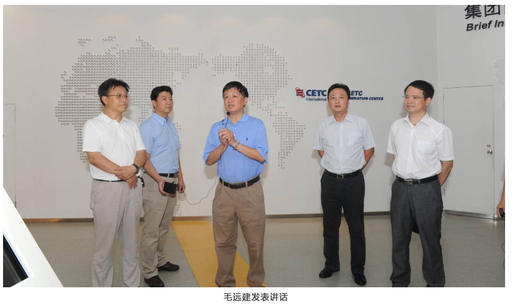

中文 language | 登录 | 注册
电话：800-8687-041
中文 language | 登录 | 注册
电话：800-8687-041
主页>新闻中心>新闻在线
NEWS RELEASES


2016-05-11
作者：王启南
2016年3月30日，中国电科党组成员、纪检组组长、副总经理毛远建到联系点中电仪器公司就企业化改革进展情况、党建工作、“四风”回头看以及发展中存在的困难和问题进行调研。

在中电仪器董事长李立功的陪同下，毛远建首先来到依爱电子产业园。在孵化养殖设备总装车间，他详细了解现代孵化养殖设备的工作原理和市场情况；在依爱消防公司，他参观了展厅和火灾报警探测器、 控制器生产线， 仔细询问产品技术水平、产业规模和经营模式等， 并对依爱消防的发展势头给予充分肯定。
随后，毛远建参观了41所展厅，观看了仪器科研成果，并切身感受了新一代移动通信系统空中接口信号监测功能的现场演示。
在会议室，毛远建首先听取了中电仪器领导班子关于公司概况、改革进程、发展规划、党建工作、巡视审计、四风“回头看”工作情况的汇报，以及存在的相关问题和建议，并就党委机构设置、 股份制改造、 进一步转变观念、 进一步站在集团高度谋发展、 对标国际一流企业做好战略布局、 以专业化的发展方式和规范化的经营模式进一步做大做强仪器仪表产业等内容进行了座谈交流。
毛远建充分肯定中电仪器率先向企业化迈进、红红火火干事创业的局面。他指出，中电仪器公司以 “六个进一步”的具体措施贯彻落实集团工作会议精神，比较准确也比较细致，是真下功夫，符合集团工作会精神，也符合集团“十三五”规划纲要精神。要深入贯彻好、定好位、谋好篇；要弄清楚“新常态”下的一系列变化，看准机遇、找对问题，随着“新常态”转变思维方式，进一步找准定位，发挥使命。要瞄准国际竞争对手，通过“自主可控”占领军队仪器市场，然后再做深度军民融合，把仪器仪表产业进一步做大做强。在抓好发展的同时，党建工作要同部署、同要求、 同谋划、 同考核，真正做到把方向、抓大事、抓干部、抓人才、抓组织建设、强基础，把这些工作做实，在改革发展过程中，发挥党组织的作用，真正担负起“两个责任”。在思维方式、组织方式和工作方式转变方面，要更加大胆地去尝试， 要标定好自己的目标、 向国内外优秀企业学习， 去参与市场去竞争。要抓好今年要开展的“ 两学一做”活动，坚持不懈的抓好作风建设，进一步打造忠诚干净担当的管理者队伍，营造风清气正干事创业的良好的氛围。我们着力点，一个是队伍建设， 真正能做到“ 忠诚、干净、担当”， 做事的时候，才能真正为企业发展去谋事，既忠诚于党的事业， 也忠诚于企业的发展； 另一个是形成风清气正干事创业的良好氛围，“新常态”下干事的方式要更健康、更规范。40 和41 所有着多年的技术积淀和市场拼搏经验， 有着一支比较好的队伍， 领导班子有想法、有激情、有凝聚力、有战斗力，只要站在集团的高度谋发展，找准方向和方法，既定的目标就一定能实现并创造新的辉煌。
上一篇：两学一做│中电仪器召开“两学一做”动员部署会
下一篇：国家电投中央研究院与中国电科41所签署战略合作框架协议

关于中电仪器
新闻中心
公司简介
工作机会
采购指南
如何购买
索取报价/p>
查看特价优惠
代理合作
技术支持
查找手册
更新固化软件/软件
访问论坛
联系我们
计量和服务
计量校准
仪器维修
培训与教育
公司链接
中国电科第41所
中国电科第40所
依爱消防
依爱通信
兴依电子

中电科技仪器仪表有限公司
青岛：地址：山东省青岛市黄岛区香江路98号
邮箱：eiqd@ei41.com
蚌埠：地址：安徽省蚌埠市华光大道726号
邮箱：eiqd@ei41.com<
www.cetcei.com 中电科仪器仪表有限公司 《中华人民共和国电信与信息服务业务经营许可证》编号： 皖ICP备05003230